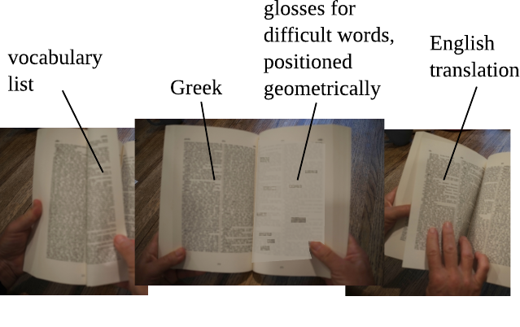

This OER/free-information book is my attempt to present the text of the Iliad in an innovative format for English speakers who are at an intermediate level in reading ancient Greek. The goal is to have a paper version that you can read while sitting on the couch with your terrier, without having to frequently consult a dictionary. (Terrier not included.)
Download the pdf file of the book (books 1-3 of the Iliad).
Download the pdf file of the book (book 4 of the Iliad).
Buy a printed copy (books 1-3 of the Iliad).
Below is a photo mockup of the idea. We have about 18 lines of Homer, in a large font, on a left-hand page. There are aids surrounding this page: one page preceding it and two pages following.

In this four-page sequence, the first page is a vocabulary list. It contains every dictionary form (lemma) corresponding to the inflected forms in the Greek text, except for a small core vocabulary, listed in the back of the book. It also lists a few inflections that may be difficult to recognize, such as irregular aorists and some third-declension nouns. The idea is that you may want to scan the vocabulary list before you try to read the actual text, locking some of the less common words into your short-term memory and priming your brain to recognize inflected forms.
Next you turn the page and you have a two-page spread, in which the left-hand page is Homer, and the right-hand page is the "ransom note." The idea of the ransom note is that for the ten or twelve least common words in the text, a translation is provided at a location that is at the same geometrical position as the corresponding Greek word in the actual text. These glosses are superimposed on top of a very light gray copy of the actual text, to make it easier to see where the lines lie and where the translation sits on its line. These words have also already been listed on the vocab page. A reader who is highly proficient and doesn't need much help may find that these words are all they need, and they never need to look at the vocab page.
Finally, the fourth page is the English translation by Buckley, which you can flip to for help. There's no need to be embarrassed about using this feature. Nobody will know but you and your terrier.
Source code is at https://github.com/bcrowell/ransom. Contact me at http://lightandmatter.com/area4author.html.